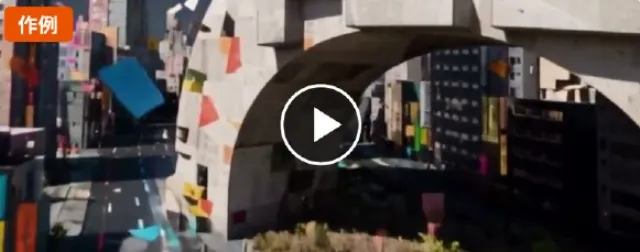
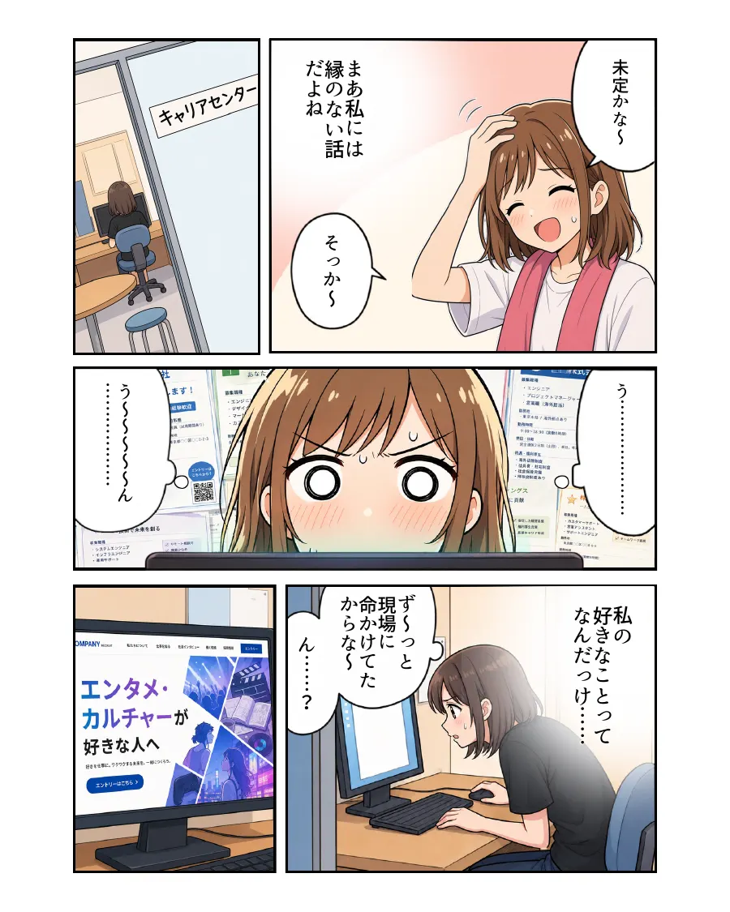
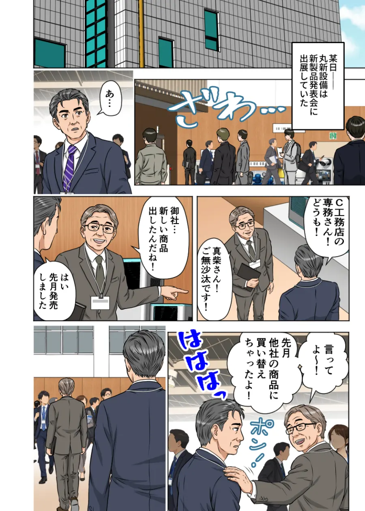

PICK UP
ビズマンガ × ビズアニメ
ASOBI SYSTEM 様｜マンガでつくった物語を、アニメへ
MANGA採用マンガ
ANIMEアニメ（約3分）
- 制作目的
- 総合職の採用
- 制作内容
- 採用マンガ（9ページ）と、同じ物語・キャラクターのアニメ
- できること
- 求職者が、入社後の働き方や職場の雰囲気を、物語として先に知ることができる
- 広がり
- 同じキャラクターと世界観のままアニメにして、読む場面と見る場面の両方で使える


02WORKS
まずは作品をご覧ください。カードを押すと、その場でマンガを読んだり、動画を再生したりできます。
PICK UP
ビズマンガ × ビズアニメ
MANGA採用マンガ
ANIMEアニメ（約3分）
※ 掲載作品は、表現の幅をお示しするための作例です。特定企業の受注実績や、実在する商品・ブランドとの関係を示すものではありません。
※ 登場する人物は、AIで生成した架空の人物です。配信時は、掲載先に合わせてAI生成である旨の表示をご案内します。
※ 美容室の採用動画（前編・後編）は構成の作例です。実際の採用動画では、社員ご本人の声や写真を使います。
03SOLUTIONS
文字だけでは伝わりにくいことを、物語と映像で伝えやすくします。
商品・サービスの魅力が、うまく伝わらない
使う前の悩みから使った後の変化までを物語にして、魅力を伝えやすくします。
マンガアニメ動画
専門的・複雑な内容を、分かりやすく説明できない
登場人物の会話と図解で、難しい内容を順を追って説明します。
マンガ
Webサイトや広告で、印象に残らない
動きと音のある短い映像で、目を止めてもらうきっかけをつくります。
アニメ動画
採用で、会社の雰囲気や仕事の魅力が伝わらない
先輩社員の一日や職場の空気を、物語や映像で見せます。
マンガ動画
営業資料だけでは、理解・納得してもらいにくい
資料やメールに添えて、商談の前に内容をつかんでもらいやすくします。
マンガ
企業理念やブランドの想いが、社内外に広がらない
創業の想いやビジョンを、記憶に残る物語として届けます。
マンガアニメ動画
研修やマニュアルの内容が、理解・定着しにくい
業務の流れや注意点を、場面として見せて理解を助けます。
マンガ動画
そのほかのお悩みも
どの表現が合うか分からない段階でも、まずはお聞かせください。
相談してみる※ おすすめの表現は目安です。目的や使う場面に合わせてご提案します。
04SERVICES

BIZ MANGA
企業の情報や商品・サービスの魅力を、ストーリーとビジュアルで分かりやすく伝える漫画制作。

BIZ ANIME
AI動画生成技術と人の演出力を掛け合わせ、広告・VTuber演出・MV・IP開発まで幅広く対応するアニメーション制作。

BIZ VIDEO
映像を通じて、企業・商品・サービスの価値を伝える動画制作。
05WHY BIZ STORY
3つのサービス共通
どの表現が合うか決まっていなくても大丈夫です。複数の表現を比べながらご相談いただけます。
3つのサービス共通
誰に、何を、どこで伝えるかをうかがい、マンガ・アニメ・動画のどれが合うかをご提案します。
ビズマンガ × ビズアニメ
マンガでつくったキャラクターと世界観のまま、アニメへ展開できます。
ビズマンガ
ヒアリングをもとに、伝えたいことが届くシナリオ・構成からご提案します。
ビズマンガ
独自の審査をクリアした作家のみが登録。専属ディレクターが企画意図を作家へ伝え、原稿の品質を確かめます。
ビズマンガ
納品時に全データの著作権・利用権をクライアントへ譲渡します。
06BENEFITS
文章や図表だけでは伝わりにくい内容を、絵と流れで整理して伝えやすくします。
数字や仕様では伝えきれない想い・雰囲気を、ストーリーや映像で表現できます。
読んでほしい相手にはマンガ、短く印象を残したい相手にはアニメ・動画、と選べます。
1つの作品を、ホームページや資料、SNS、採用活動など複数の場面で活用できます。
親しみやすい表現で、会社やサービスを覚えてもらうきっかけをつくります。
マンガからアニメへ、など1つの物語を複数の接点で使う企画もご相談いただけます。
07USE CASES
押すと、近い制作実績をご覧いただけます。

広告・プロモーションWeb広告、SNS広告、キャンペーン、サービス告知アニメ／動画
採用・人材獲得会社紹介、仕事紹介、採用コンテンツ、社員紹介マンガ／動画 営業・商品説明サービス紹介、営業資料、展示会、商談用コンテンツマンガ
営業・商品説明サービス紹介、営業資料、展示会、商談用コンテンツマンガ
教育・研修社内研修、コンプライアンス、業務マニュアル、教育教材マンガ／動画 エンタメ・IP開発オリジナル作品、キャラクター、MV、VTuber関連映像アニメ
エンタメ・IP開発オリジナル作品、キャラクター、MV、VTuber関連映像アニメ※ おすすめの表現は目安です。
08PROCESS
はじめてのご依頼でも、ご相談から納品まで順を追って進めます。
フォームからお気軽にご連絡ください。
伝えたいこと、相手、使う場面をうかがいます。
表現の方法と構成、お見積もりをご提案します。
マンガ・アニメ・動画を制作します。
途中の段階でご確認いただき、修正します。
使う場面に合わせた形式でお渡しします。
※ 工程・期間・修正の回数は、サービスや内容によって異なります。個別にご案内します。
09FAQ
はい。ご相談・お見積もりは無料です。お気軽にお問い合わせください。
御社の事業の強みを、お客様の課題が解決するまでの流れとして1ページの漫画にしたものです。対象や条件は、お問い合わせのあとにご案内します。
はい。目的や使う場面をうかがい、合う表現や組み合わせをご提案します。
はい。ヒアリングをもとに、企画・構成の段階からご相談いただけます。
はい。目的と内容をうかがい、ご予算に合わせた進め方をご提案します。
ご相談ください。ヒアリングの内容をもとに、構成からご提案します。
内容・ページ数・映像の長さによって異なります。ご希望の時期をうかがい、個別にご案内します。
サービスや内容によって異なります。個別にご案内します。
ビズマンガは、納品時に著作権・利用権をお客様へ譲渡します。ビズアニメ・ビズ動画は、ご契約の際に個別にご案内します。
ご契約の範囲で、複数の媒体でご活用いただけます。使う予定の媒体をお知らせいただければ、合わせてご案内します。
10 CONTACT
まずは、やりたいことをお聞かせください。使うサービスが決まっていなくても構いません。